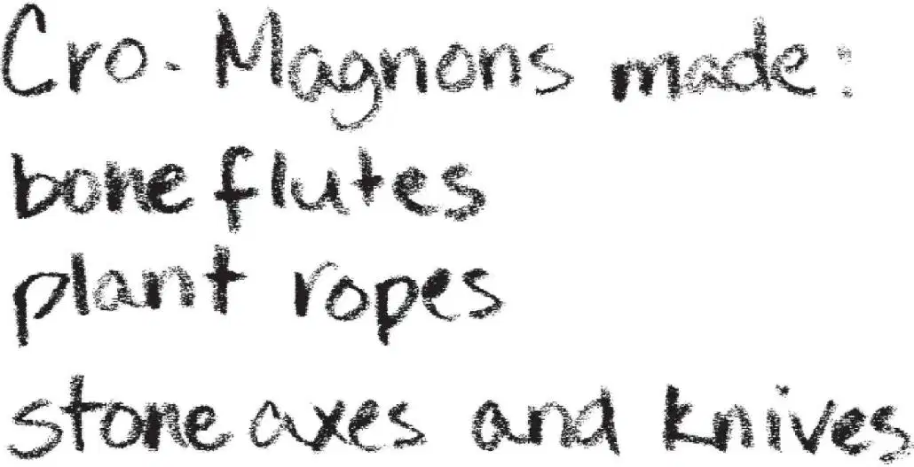
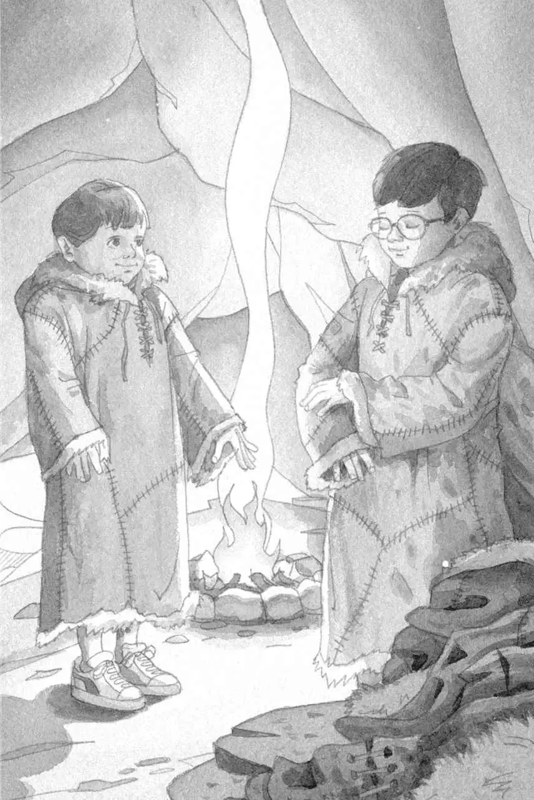

Jack and Annie crept to the cave and peeked inside.
A small flame danced from a bed of glowing coals.
Near the fire were knives, axes, and hollowed-out stones.
Animal skins were neatly stacked against the wall.
“People must live here,” said Annie.
“Maybe it’s the home of the Cro-Magnons we saw,” said Jack, looking around.
“Let’s go inside and get warm,” said Annie.
Jack and Annie moved quickly to the fire and warmed their hands.
Their shadows danced on the stone walls.
Jack pulled out his Ice Age book. He found a picture of a cave. He read:
Cro-Magnons made many things from animals, plants, and stone. They made flute-like musical instruments from mammoth bones. They made ropes by braiding plant fibers. They made axes and knives from stone.
Jack pulled out his notebook and pencil. He started a list:

“Ta-da!” said Annie.
Jack looked up. Annie was wearing a coat.
It had a hood and long sleeves. It went all the way down to her sneakers.
“Where did you get that?” said Jack.
“From that pile of furry skins,” said Annie, pointing. “These must be their clothes. Maybe they’re being mended.”
She picked up another coat and handed it to Jack.
“Try one. It’s really warm,” she said.
Jack put his backpack and towel down on the hard dirt floor. He slipped on the coat.

It did feel very warm—and soft.
“We look like cave kids,” said Annie.
Squeak. Peanut peeked out of Jack’s pack lying on the floor.
“You stay in there,” said Annie. “There’s no teeny coat for you.”
Peanut vanished back into the pack.
“I wonder how they made these coats,” said Jack.
He turned the pages in the book until he found a picture of Cro-Magnon women sewing. He read:
Cro-Magnons scraped reindeer skins with flint rocks to make them soft. They used bone needles to sew the skins together for clothing.
Jack added to his list:
“I hope the cave people won’t mind if we borrow their coats,” said Jack.
“Maybe we should give them our towels,” said Annie. “To thank them.”
“Good idea.”
“And my goggles, too,” said Annie.
They left their gifts on top of the rest of the animal skins.
“Let’s explore the cave before they come home,” said Jack.
“It’s too dark in the back,” said Annie. “We won’t be able to see anything.”
“I’ll find out how Cro-Magnons saw in the dark,” said Jack.
He opened the Ice Age book. He found a picture of cave people holding odd-looking lamps. He read aloud to Annie:
Cro-Magnons made stone lamps. They hollowed out a rock, filled it with animal fat, then burned a wick made from moss.
“There!” said Annie. She pointed to two stones near the fire. In the hollow of each was gooey white stuff and a pile of moss.
“We have to be careful,” said Jack.
He picked up one stone. It was smaller than a soup bowl, but much heavier.
Jack held the stone close to the fire and lit the piece of moss.
He lit another lamp and gave it to Annie.
“Carry it with two hands,” he said.
“I know,” she said.
Jack tucked the book under his arm. He and Annie carried their stone lamps to the back of the cave.
“Hey, I wonder where this goes,” said Annie. She held her lamp up to an opening in the wall.
“I’ll check in the book,” said Jack.
He put down his lamp and flipped through the Ice Age book.
“I think it’s a tunnel,” she said. “Be right back.”
“Wait a second,” said Jack.
Too late—she had squeezed into the opening and was gone.
“Oh brother,” said Jack, sighing.
He closed his book and peeked into the opening.
“Come back here!” he said.
“No! You come here!” said Annie. Her voice sounded far away. “You won’t believe this!”
Jack picked up his lamp and book. He ducked into a small tunnel.
“Wow!” came Annie’s voice.
Jack could see her lamp flickering at the other end.
Crouching down, he hurried toward her. At the end of the tunnel was a huge cavern with a high ceiling.
Annie held her lamp close to the wall.
“Look,” she said. Her voice echoed.
Animals were painted on the wall in strokes of red and black and yellow.
There were cave bears and lions, elk and reindeer, bison and woolly rhinos and mammoths.
In the flickering light, the prehistoric beasts looked alive.